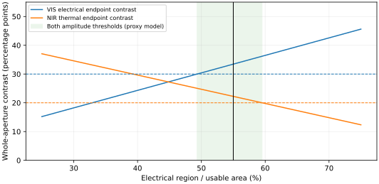

2026-11-06 · 工艺优先的结构设计与首轮判别
先减少加工难点，再检查能否完成原题
当前交付是具体候选与可判别的完成路径，不是制造完成声明。旧12实体液晶构造不再作为易加工推荐。新题二方案省去液腔、配向、薄板叠装和外筛，但薄云母、离子层、电化学温依与VO₂跨制程复谱仍待落实。严格折射率A已知不通过；B只能作为待材料验证的候选。题一保留已有七层平面膜作为工艺核查对象，本轮没有新增题一光学成绩。
题二的首选候选：同一片薄基底上左右分区
使用一片目标厚8µm的云母，在同一面制作毫米级电控区与温控区。先做需要高温的VO₂区，再遮蔽该区、低温制作电致变色叠层。两区光路并联，避免WO₃着色时把温控VO₂所需的近红外光先挡掉。该器件在空间上不均匀；下列指标针对同一整孔径的总透射功率，不等同于每个局部像素都具备双响应。
电控截面最多7层，温控截面3层；把两处不同厚度盖层分别算入，共9个保留实体。所有设计膜厚在10–10000nm内；横向只有毫米级分区与40µm间隔，不设计亚微米图案或纳米颗粒混合。器件工艺仍需要真空镀膜、掩膜、控温及离子装载能力，不能把“省掉装配”写成只需简单涂刷。
完整工序怎样衔接
本轮已完成的计算：面积预算确实有空间
采用原探索口径：法向非偏振，VIS380–780nm、NIR780–2500nm、波长均匀平均；对另一控制态取最小主幅。完整谱包括所有输入表原生节点；VO₂1.34–1.43µm源空档仅作显式线性插值。裸云母条的透射已保留，不虚构黑色遮挡层。各区R/T采用同一平面叠层求解器，空间平均假定照明和收集同时覆盖两区。

两区分别通过独立光路贡献功率。相同面积应同时满足两项不等式，不能把两个区域分别归一化后相加。
对电控区域局部主幅a、温控区域局部主幅b、有效区内电控比例f、非响应间隔比例g，整器件需要(1−g)fa>0.30和(1−g)(1−f)b>0.20。名义a=62.06pp、b=50.40pp，g=2%时允许f约49.33%–59.51%（严格开区间）。64个指定情景的共同区间为50.16%–58.85%。选55%留出一定面积余量，并不是全局最优证明。
500nm ITO沿用现有电极实体，不新增光学滤片；它降低电控区的NIR电响应，代价是电控区VIS主幅下降。300nm热区盖层提升此处模型的NIR温差。它们是可由普通镀膜厚度控制的改动，但所用材料响应迁移、残余应力与保护功能仍未证实。
真实负证决定下一步，而不是继续堆层
只Film4留下可行面积区间。它不是“任何VO₂/云母都可以”的证据：前三种数据即使调整面积也无法在这个既定电控结构下同时过线。其否定范围限于本结构、本源厚度和盖层，不是原题不可行定理。
必须先解决的三个材料/工艺问题
- 薄云母上的VO₂能否保留足够温响应？所需局部NIR温主幅>45.35pp。当前50.40pp来自Film4跨基底迁移，余量不能代替证据。应先取得/核查同制程两温全谱；未过预算便停止此材料组合，不能借用硅样品成绩。
- 电控叠层在两温共同电压下是否仍有足够VIS响应？局部VIS电主幅须>55.66pp。当前62.06pp来自公开电荷端点。Li剂量匹配约33.32mC/cm²只是容量目标；不证明充电动力学、可逆性或100°C适用性。
- 实际支持与保留层能否维持可加工性？需要5–9µm云母的厚度/裂纹/全谱复张量、各层工艺温度及残余应力、局部边界电接触/短路防护。不能把普通厚基底、补加胶层或特殊释放工艺藏起来。若必须恢复复杂释放/多片装配，便失去本路线的工艺优势。
折射率与“解耦”的结论边界
严格A：该材料组合明确失败。已计算有限层n范围0.23–3.3445，超出1.5–3；不能通过改厚度修复材料本身的越界。标称B：建议明确550nm、30°C、EC透明/VO₂绝缘态为参考，各公开功能膜名义n在1.5–3内；但云母和含Li导体仍是代理，故整器件B也未认证。原题没有确认参考点，本报告不把建议写成用户规定。
两区功率相加且暂假设EC谱不随温度变，所以混合差分接近零；这由模型结构造成，不能当作实物解耦证据。NIR电串扰7.40pp仍需按带平均和逐谱报告。题二没有新增最低透明态透过率要求；本候选的空间不均匀与低透射状态均应披露。
题一怎样按同一原则推进
题一保留更接近常规镀膜工艺的七层平面方案：PEI9000 / TiO₂123 / Al₂O₃178 / TiO₂123 / Al₂O₃178 / ITO870 / Al₂O₃60nm。同一H/L配方重复两次，不再为几乎没有收益的独立层厚增加配方。基膜先完成预处理和尺寸稳定，再在外围载架上连续镀膜，保留所有保护层；不为减层恢复侧壁、独立薄片或隐藏胶。
本轮不重用不同制程薄膜的数值成绩来声称制造通过。下一决定性输入仍是同热史PEI短波复谱、完整氧化物/ITO膜谱、薄基膜收缩和残余应力。若不得不降低沉积温度或换材料，先重建该制程材料数据再重算三波段；不能沿用旧n/k。七层原数值结果与热史正负证保留，严格A与完整加工尚未闭合。
先例与本设计之间的差距
复算与下一决定
先核查三个关键材料/工艺问题；有对应数据时直接替换代理并重算。若B路线能保留阈值和可衔接制程，再完善完整器件敏感性与误差预算；严格A须换材料家族，不能在已知越界的ITO/VO₂组合上继续声称接近闭合。常规单胞液晶仅作为后备，需要真实薄支持、电极、统一配向及全谱数据；不回到多方向光栅/外筛。
计算与条件JSON四态CSV输入、源码与复核包
python -X utf8 verify.py独立重积分四态CSV；python -X utf8 recompute.py从包内输入重新计算条件光学/面积预算与64情景（NumPy2与tmm0.2.0），输出到新目录。包内另有实际源码快照；便携入口只改路径，物理逻辑相同。这不是实际电压驱动或制造的复现。早期字段名错误和缺tmm环境失败保留在run01/02，本结果是run05；run03/04保留作为改动对照。